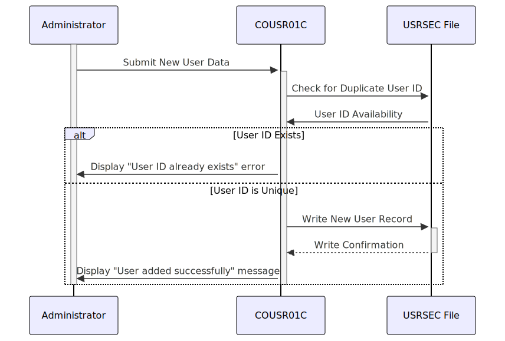

Gerado em: 1 de outubro de 2024
Título do Documento: CardDemo Sistema de Gerenciamento de Usuários - Especificação do Programa Adicionar Novo Usuário
Descrição Resumida:
Este documento descreve as especificações técnicas para o programa COBOL COUSR01C, responsável por adicionar novos usuários ao aplicativo CardDemo. Ele abrange a validação de dados, verificações de segurança, armazenamento de dados do usuário e interação com o CICS.
Histórias do Usuário: Como administrador do CardDemo, preciso poder adicionar novos usuários ao sistema para que eles possam acessar o aplicativo e executar suas funções atribuídas.
Épico Relacionado: 6 - Gerenciamento de Usuários e Segurança
Requisitos Técnicos:
COUSR1AI (recebida da tela “Adicionar Usuário”) para os seguintes campos:
FNAMEI): Não pode estar vazio.LNAMEI): Não pode estar vazio.USERIDI): Não pode estar vazio e deve ser exclusivo (verificado no arquivo USRSEC).PASSWDI): Não pode estar vazia.USRTYPEI): Não pode estar vazio e deve ser “Regular” ou “Admin”.USRSEC.SEC-USER-DATA é usada para formatar os dados antes de gravá-los no arquivo.SEC-USR-ID é usado como chave para o arquivo USRSEC.WS-ERR-FLG é definido como ‘Y’.WS-MESSAGE.COUSR1AI.SEND-USRADD-SCREEN é executada para exibir novamente a tela com a mensagem de erro.USRSEC:
RECEIVE: Para receber entrada do usuário do mapa COUSR1A.SEND: Para enviar o mapa COUSR1A ao terminal do usuário.WRITE: Para gravar o novo registro do usuário no arquivo USRSEC.XCTL: Para transferir o controle para outro programa.COUSR1A e o conjunto de mapas COUSR01 para entrada e exibição do usuário.SEND-USRADD-SCREEN preenche e envia a tela ao usuário.RECEIVE-USRADD-SCREEN recebe a entrada do usuário da tela.CURRENT-DATE e as formata para exibição na tela.USRSEC ou o sistema subjacente lida com a segurança da senha.Modelos Relacionados:
SEC-USER-DATA:
SEC-USR-ID X(XX): Identificador exclusivo do usuário.SEC-USR-FNAME X(XX): Nome do usuário.SEC-USR-LNAME X(XX): Sobrenome do usuário.SEC-USR-PWD X(XX): Senha do usuário.SEC-USR-TYPE X(XX): Função do usuário (Regular ou Admin).Configurações:
WS-USRSEC-FILE: Nome do arquivo para o banco de dados de usuários (USRSEC).Melhorias de Código:
USRSEC.Melhorias de Segurança:
COUSR01C, garantindo que apenas pessoal autorizado possa adicionar novos usuários.Diagrama Conceitual:
–Made by “Smart Engineering” (by Compass.UOL)–